前言
以前只是粗略的知道反序列化漏洞的原理，最近在学习Laravel框架的时候正好想起以前收藏的一篇反序列化RCE漏洞，借此机会跟着学习一下POP链的挖掘
简介
Laravel是一个使用广泛并且优秀的PHP框架。这次挖掘的漏洞Laravel5.7版本，该漏洞需要对框架进行二次开发才能触发该漏洞
本地环境
- 使用composer部署Laravel项目
- 创建一个名为laravel的Laravel项目
composer create-project laravel/laravel=5.7.* --prefer-dist ./ - Laravel框架为单入口，入口文件为
{安装目录}/public/index.php，使用apache部署后访问入口文件显示Laravel欢迎界面即安装成功（或者使用命令php artisan serve开启临时的开发环境的服务器进行访问）
- 创建一个名为laravel的Laravel项目
- 配置路由以及控制器
- Laravel所有的用户请求都由路由来进行控制。我们添加一条如下的路由
1
2
3
4
5
6
7
8
9
10
11
12
13
14
15
16
17
use \Illuminate\Support\Facades\Route;
/*
|--------------------------------------------------------------------------
| Web Routes
|--------------------------------------------------------------------------
|
| Here is where you can register web routes for your application. These
| routes are loaded by the RouteServiceProvider within a group which
| contains the "web" middleware group. Now create something great!
|
*/
Route::get('/', function () {
return view('welcome');
});
// 添加的路由
Route::get('/test', 'Test\TestController@Test');
- Laravel所有的用户请求都由路由来进行控制。我们添加一条如下的路由
- 控制器中
Test函数实现反序列化功能：1
2
3
4
5
6
7
8
9
10
11
12
13namespace App\Http\Controllers\Test;
use Illuminate\Http\Request;
use App\Http\Controllers\Controller;
class TestController extends Controller
{
public function Test()
{
$code = $_GET['c'];
unserialize($code);
}
}
漏洞分析
Laravel5.7版本在vendor/laravel/framework/src/Illuminate/Foundation/Testing文件夹下增加了一个PendingCommand类，官方的解释该类主要功能是用作命令执行，并且获取输出内容。
该类中几个重要属性：
1 | public $test; //一个实例化的类 Illuminate\Auth\GenericUser |
- 用于命令执行的函数为
PendingCommand.php中的run()函数1
2
3
4
5
6
7
8
9
10
11
12
13
14
15
16
17
18
19
20
21
22
23
24
25
26
27
28
29
30/**
* Execute the command.
*
* @return int
*/
public function run()
{
$this->hasExecuted = true;
$this->mockConsoleOutput();
try {
$exitCode = $this->app[Kernel::class]->call($this->command, $this->parameters);
} catch (NoMatchingExpectationException $e) {
if ($e->getMethodName() === 'askQuestion') {
$this->test->fail('Unexpected question "' . $e->getActualArguments()[0]->getQuestion() . '" was asked.');
}
throw $e;
}
if ($this->expectedExitCode !== null) {
$this->test->assertEquals(
$this->expectedExitCode,
$exitCode,
"Expected status code {$this->expectedExitCode} but received {$exitCode}."
);
}
return $exitCode;
} run()函数被析构函数__destruct()调用简单的POP链为：构造的exp经过反序列化后调用1
2
3
4
5
6
7
8
9
10
11
12
13/**
* Handle the object's destruction.
*
* @return void
*/
public function __destruct()
{
if ($this->hasExecuted) {
return;
}
$this->run();
}__destruct()，进而调用run(),run()进行代码执行。下面进行详细的分析- 首先将构造好的序列化数据通过参数C传入，调用
__destruct()，__destruct()方法中首先判断$hasExecuted，如果为true则return，可以看到该变量默认值为false，所以可以顺利进入run()方法`1
2
3
4
5
6/**
* Determine if command has executed.
*
* @var bool
*/
protected $hasExecuted = false; - 观察run()方法内的代码，我们要让代码顺利执行到
run()处才能顺利执行代码。首先进入mockConsoleOutput()方法
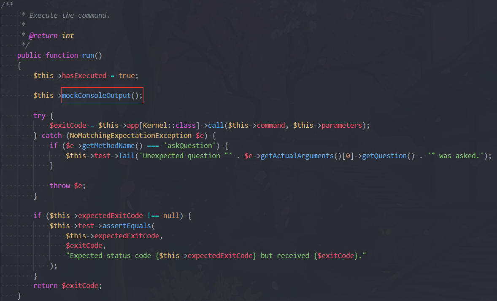
- 171行使用
Mockery::mock实现对象模拟，经过调试可以顺利运行，接下来进入mockConsoleOutput()函数
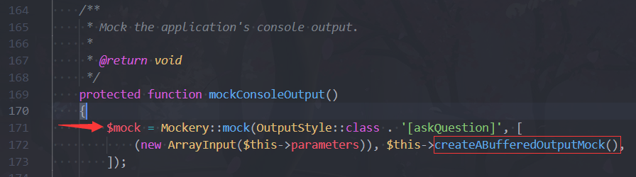
- 接下来又是
Mockery::mock实现对象模拟，经过调试代码可以顺利运行到foreach，foreach循环里的代码是$this->test->expectedOutput，这里对$this->test类的expectedOutput属性
进行遍历作为数组，代码才能正常执行下去。但是该类并不存在expectedOutput属性；经过分析代码，我们发现这里只要能够返回一个数组代码就可以顺利进行下去。
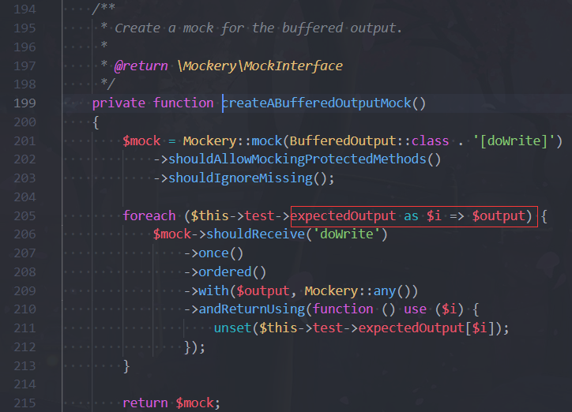
- 因此我们全文搜索
__get()方法，让__get()方法返回我们想要的数组就可以了。这里我选择的是DefaultGenerator.php类
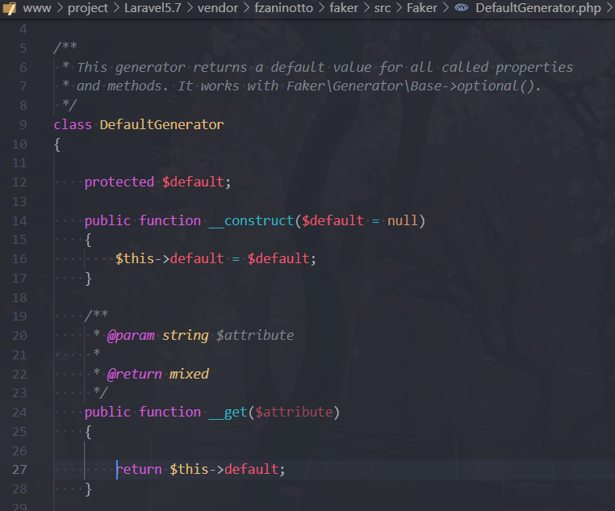
- 我们对
DefaultGenerator类进行实例化并传入数组array('hello'=>'world')，打断点进行调试可以看到代码顺利执行下去了
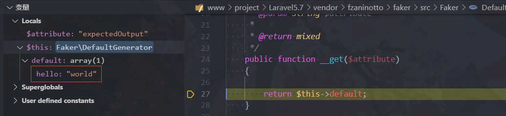
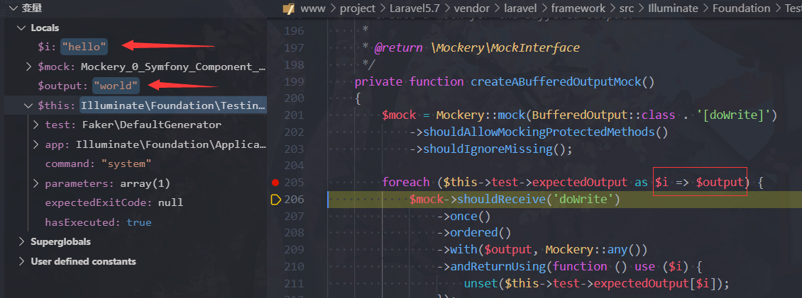
- 后面的代码都是可以顺利执行下去的，接下来我们又回到了
mockConsoleOutput()方法内，接下来又是一个forearch循环，如上一步的遍历数组一样，顺利执行下去
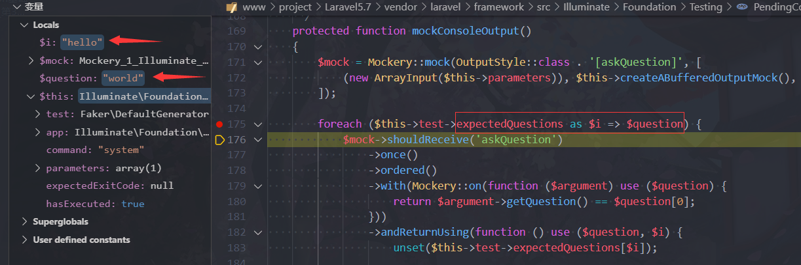
接下来代码会执行到
$exitCode = $this->app[Kernel::class]->call($this->command, $this->parameters);，其中Kernel::class为固定值："Illuminate\Contracts\Console\Kernel"，在该处下断点进行调试分析下面的调用栈→ offsetGet(),$key=”Illuminate\Contracts\Console\Kernel”

→ make(),$abstract=”Illuminate\Contracts\Console\Kernel”
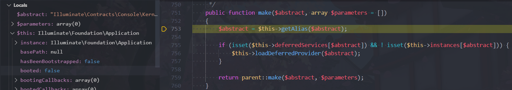
→ make():父类的make(),$abstract=”Illuminate\Contracts\Console\Kernel”,$parameters=array(0)
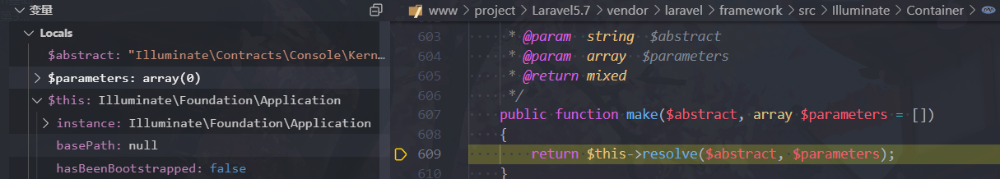其中
return $this->instances[$abstract];=$this->instances["Illuminate\Contracts\Console\Kernel"]也就是返回了Illuminate\Foundation\Application对象；即我们可以将任意对象赋值给 $this->instances[$abstract] ，这个对象最终会赋值给[Kernel::class]，接着调用call()方法→ resolve(),$abstract=”Illuminate\Contracts\Console\Kernel”，instances数组中为Application对象
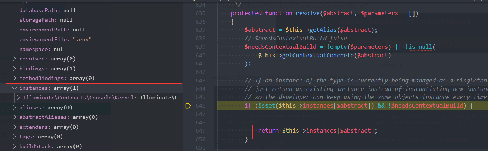下面我们成功的执行到了
call()方法，→call()
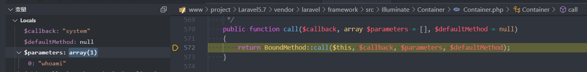其中
isCallableWithAtSign()方法是判断确定给定的字符串是否使用Class@method语法，不满足自然跳出，执行到1
2
3
4
5return static::callBoundMethod($container, $callback, function () use ($container, $callback, $parameters) {
return call_user_func_array(
$callback, static::getMethodDependencies($container, $callback, $parameters)
);
});→BoundMethod::call()
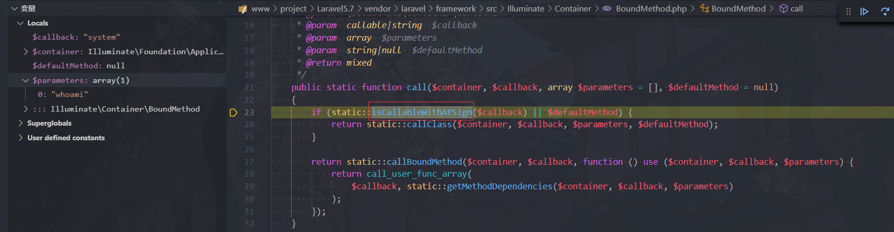我们来分析一下
callBoundMethod()函数，可以发现它的作用只是判断$callback是否为数组1
2
3
4
5protected static function callBoundMethod($container, $callback, $default)
{
if (! is_array($callback)) {
return $default instanceof Closure ? $default() : $default;
}继续跟进下面的匿名函数：
1
2
3
4
5function () use ($container, $callback, $parameters) {
return call_user_func_array(
$callback, static::getMethodDependencies($container, $callback, $parameters)
);
}其中
$callback参数是我们可控的，第二个参数由函数getMethodDependencies()控制，我们跟进看一下
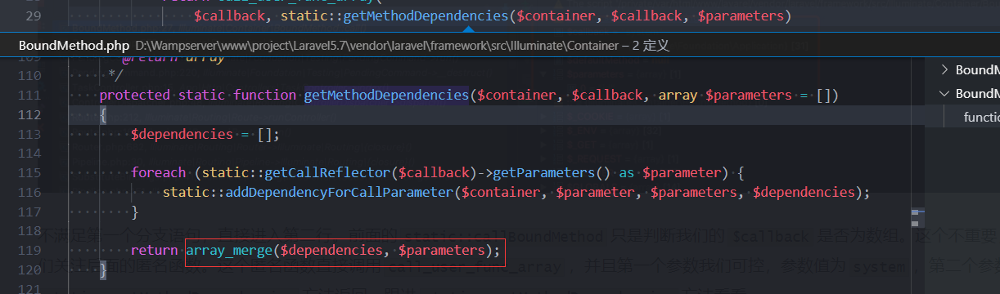经过调试，得出结论：它将我们传入的
$parameters数组和$dependencies数组合并，其中$dependencies数组为空，而$parameters数组是我们可控的。最终也就是执行了call_user_func_array('xxx',array('xxx'))
本地环境复现
exp文件
1 |
|
- 最后贴上利用截图
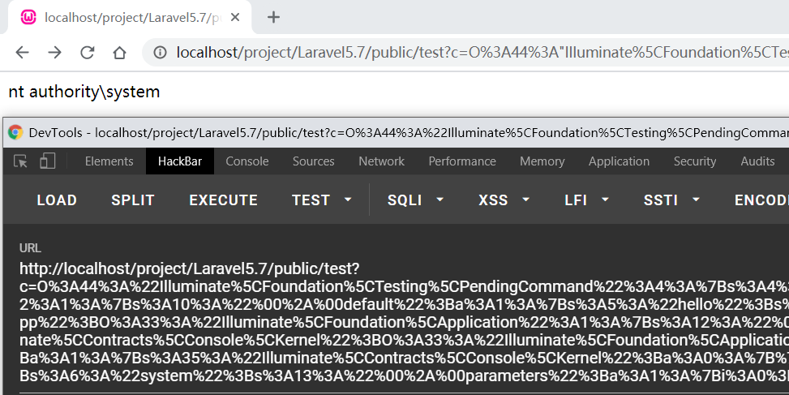
总结
- 这个反序列化RCE重要的点：
- 在进入run()函数，运行到call()前，需要bypass
mockConsoleOutput()和mockConsoleOutput()，由于某个属性的不存在，我们需要魔法函数__get()返回数组来顺利运行下文的代码
- 在进入run()函数，运行到call()前，需要bypass